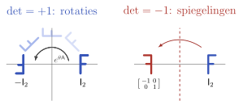
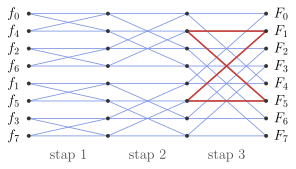
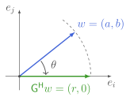
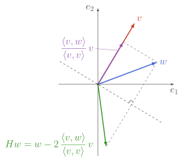
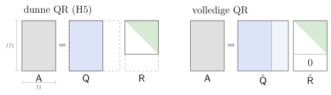
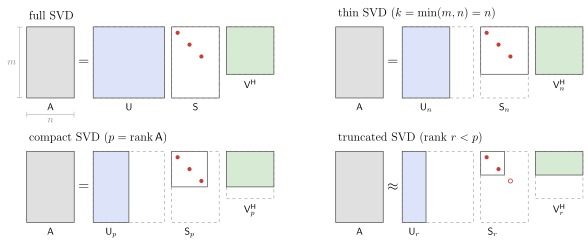
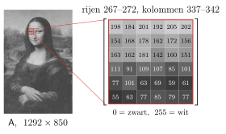
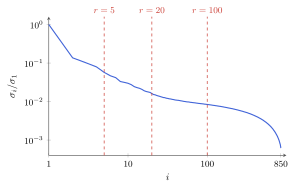

Hoofdstuk 7 - Unitaire gelijkvormigheid en unitaire equivalentie
Doel van dit hoofdstuk
$$ % Math operators % %
% VECTORS % specifically for vectors in F^n
% MATRICES
% SCALARS
% LINEAR MAPS
% FIELDS
% RELATIONS
$$
Unitaire matrices bewaren lengtes en hoeken: {\left\lVert{\mathsf{U}}{x}\right\rVert} = {\left\lVert{x}\right\rVert}, \quad {\left\langle{\mathsf{U}}{x},{\mathsf{U}}{y}\right\rangle} = {\left\langle{x},{y}\right\rangle}, \quad \kappa({\mathsf{U}}) = 1
- \Rightarrow afrondingsfouten worden niet versterkt: stabiele algoritmen
- \Rightarrow ze zetten een orthonormale basis om in een orthonormale basis
Hoe ver kun je een matrix vereenvoudigen met enkel unitaire transformaties?
| transformatie | canonische vorm | waarvoor |
|---|---|---|
| gelijkvormig: {\mathsf{V}}^{-1}{\mathsf{A}}{\mathsf{V}} | Jordan (H3) | numeriek instabiel |
| unitair gelijkvormig: {\mathsf{Z}}^{\mathsf{H}}{\mathsf{A}}{\mathsf{Z}} | Schur: bovendriehoeks | eigenwaarden |
| unitair equivalent: {\mathsf{U}}^{\mathsf{H}}{\mathsf{A}}{\mathsf{V}} | SVD: diagonaal, \sigma_i \geq 0 | rang, normen, benaderingen |
Doel van dit hoofdstuk
Algoritmen, decomposities en toepassingen van unitaire transformaties
- Elementaire unitaire transformaties
- permutaties, discrete Fouriertransformatie, Givens, Householder
- QR decompositie
- Unitaire gelijkvormigheid: Schur triangulatie
- basis voor eigenwaardeproblemen
- Unitaire equivalentie: singuliere waardendecompositie (SVD)
- kleinste kwadraten, Moore-Penrose inverse
- matrixnormen, lage-rang benaderingen
- Bilineaire vormen: traagheidswet van Sylvester
Terugblik: H2–H5
wat we nodig hebben
Terugblik: rang en eigenwaarden (H2–H3)
Rang: \mathop{\mathrm{rank}}({\mathsf{A}}) = \mathop{\mathrm{dim}}\mathop{\mathrm{im}}({\mathsf{A}})
- rang-nulliteit: n = \mathop{\mathrm{rank}}({\mathsf{A}}) + \mathop{\mathrm{dim}}\mathop{\mathrm{ker}}({\mathsf{A}}) (St 2.11)
Gelijkvormig: {\mathsf{T}}^{-1}{\mathsf{A}}{\mathsf{T}} heeft dezelfde eigenwaarden (Def 2.17)
Multipliciteit van eigenwaarde \lambda:
- algebraïsch: q_\lambda = multipliciteit als nulpunt van \det({\mathsf{A}} - \lambda{\mathsf{I}})
- meetkundig: r_\lambda = \mathop{\mathrm{dim}}\mathop{\mathrm{ker}}({\mathsf{A}} - \lambda{\mathsf{I}}) \leq q_\lambda
- diagonaliseerbaar \Leftrightarrow r_\lambda = q_\lambda voor alle \lambda
{\mathsf{A}}{\mathsf{B}} en {\mathsf{B}}{\mathsf{A}} hebben dezelfde eigenwaarden \neq 0 (Prop 3.11)
Terugblik: normen (H4)
- Geïnduceerde norm (Prop 4.18) {\left\lVert{\mathsf{A}}\right\rVert} = \sup_{{x}\neq 0} \frac{{\left\lVert{\mathsf{A}}{x}\right\rVert}}{{\left\lVert{x}\right\rVert}} \geq \rho_{{\mathsf{A}}}
- Gelfand (Prop 4.19) \rho_{{\mathsf{A}}} = \lim_{k \to \infty} {\left\lVert{\mathsf{A}}^k\right\rVert}^{1/k}
- Frobenius (Prop 4.17) {\left\lVert{\mathsf{A}}\right\rVert}_{\text{F}} = \sqrt{\mathop{\mathrm{tr}}({\mathsf{A}}^{\mathsf{H}}{\mathsf{A}})}
- Conditiegetal: versterkt relatieve fouten \kappa({\mathsf{A}}) = {\left\lVert{\mathsf{A}}\right\rVert}{\left\lVert{\mathsf{A}}^{-1}\right\rVert}, \qquad \frac{{\left\lVert\Delta{x}\right\rVert}}{{\left\lVert{x}\right\rVert}} \leq \kappa({\mathsf{A}})\frac{{\left\lVert\Delta{y}\right\rVert}}{{\left\lVert{y}\right\rVert}}
Terugblik: inwendig product (H5)
Isometrie: {\mathsf{Q}}^{\mathsf{H}}{\mathsf{Q}} = {\mathsf{I}} (Prop 5.31)
Unitair: ook {\mathsf{U}}{\mathsf{U}}^{\mathsf{H}}= {\mathsf{I}} (Prop 5.32)
Normaal: {\mathsf{A}}^{\mathsf{H}}{\mathsf{A}} = {\mathsf{A}}{\mathsf{A}}^{\mathsf{H}}, bv. hermitisch of unitair (Def 5.24)
- eigenvectoren bij verschillende eigenwaarden zijn orthogonaal (Prop 5.35)
- {\left\lVert{\mathsf{A}}\right\rVert}_2 = \rho_{{\mathsf{A}}} (Prop 5.37)
QR via Gram-Schmidt: {\mathsf{A}} = {\mathsf{Q}}{\mathsf{R}}, {\mathsf{Q}}^{\mathsf{H}}{\mathsf{Q}} = {\mathsf{I}}, {\mathsf{R}} bovendriehoeks (Def 5.21)
Kleinste kwadraten, {\mathsf{A}} met volle kolomrang (Def 5.26–5.27) {x}^\ast = \mathop{\mathrm{arg\ min}}_{{x}} {\left\lVert{\mathsf{A}}{x}- {y}\right\rVert}_2 = {\mathsf{R}}^{-1}{\mathsf{Q}}^{\mathsf{H}}{y}= {\mathsf{A}}^+{y}
Unitaire en orthogonale groep
Unitaire groep en speciaal unitaire groep
Definitie 7.1. Unitaire groep: \boxed{\mathop{\mathrm{U}}(n) = \{{\mathsf{U}}\in{\mathbb{C}}^{n\times n} \mid {\mathsf{U}}^{\mathsf{H}}{\mathsf{U}} = {\mathsf{I}}_n = {\mathsf{U}}{\mathsf{U}}^{\mathsf{H}}\}}
- {\left\lvert\det({\mathsf{U}})\right\rvert} = 1 \implies \det({\mathsf{U}}) \in \mathop{\mathrm{U}}(1)
- Deelgroep: speciaal unitaire groep \mathop{\mathrm{SU}}(n) = \{{\mathsf{U}}\in \mathop{\mathrm{U}}(n) \mid \det({\mathsf{U}})=1\}
Opmerking 7.1. \mathop{\mathrm{U}}(n) is een gesloten en begrensde deelverzameling van {\mathbb{C}}^{n \times n} (geen deelruimte)
\Rightarrow unitaire matrices kunnen niet divergeren: belangrijk voor numerieke stabiliteit
Opmerking 7.2. {\mathsf{U}} is normaal \Rightarrow diagonaliseerbaar met orthonormale eigenvectoren;
{\mathsf{U}}\boldsymbol{v} = \lambda\boldsymbol{v} \Rightarrow {\left\lvert\lambda\right\rvert} = 1, dus \lambda \in \mathop{\mathrm{U}}(1)
Unitaire groep en speciaal unitaire groep
Exponentiële parametrisatie: \boxed{{\mathsf{U}}(t) = \exp(t{\mathsf{A}}) \in \mathop{\mathrm{U}}(n) \quad\Leftrightarrow\quad {\mathsf{A}} = -{\mathsf{A}}^{\mathsf{H}}}
- oplossing van \frac{{\mathrm{d}}\ }{{\mathrm{d}}t}{\mathsf{U}}(t) = {\mathsf{A}}{\mathsf{U}}(t) met {\mathsf{U}}(0) = {\mathsf{I}}_n
- vaak {\mathsf{A}} = {\mathrm{i}}{\mathsf{H}} met {\mathsf{H}} = {\mathsf{H}}^{\mathsf{H}}
- {\mathsf{A}} of {\mathsf{H}} geparameteriseerd door n^2 reële getallen
- {\mathsf{U}}(t) \in \mathop{\mathrm{SU}}(n) \iff \mathop{\mathrm{tr}}({\mathsf{A}})=0: n^2-1 reële getallen
\mathop{\mathrm{U}}(n) is samenhangend: elke twee elementen verbonden door een continu pad in \mathop{\mathrm{U}}(n)
- continu pad {\mathsf{U}}(t)=\exp(t {\mathsf{A}}) verbindt {\mathsf{U}}(0)={\mathsf{I}}_n met {\mathsf{U}}(1)= {\mathsf{U}}
- via de keuze {\mathsf{A}}=\log({\mathsf{U}}): bestaat steeds, maar niet uniek
Orthogonale groep en speciaal orthogonale groep
Definitie 7.2. Orthogonale groep: \boxed{\mathop{\mathrm{O}}(n) = \{{\mathsf{O}}\in{\mathbb{R}}^{n\times n} \mid {\mathsf{O}}^{\mathsf{T}}{\mathsf{O}} = {\mathsf{I}}_n = {\mathsf{O}}{\mathsf{O}}^{\mathsf{T}}\} = \mathop{\mathrm{U}}(n) \cap {\mathbb{R}}^{n \times n}}
- Deelgroep: speciaal orthogonale groep \mathop{\mathrm{SO}}(n) = \{{\mathsf{O}}\in \mathop{\mathrm{O}}(n) \mid \det({\mathsf{O}})=1\}: “rotaties”
Opmerking 7.3. \mathop{\mathrm{O}}(n) is gesloten en begrensd, maar \det({\mathsf{O}}) = \pm 1 \implies \mathop{\mathrm{O}}(n) niet samenhangend
Opmerking 7.4. {\mathsf{O}}(t) = \exp(t{\mathsf{A}}) met {\mathsf{A}} = -{\mathsf{A}}^{\mathsf{T}} \implies {\mathsf{O}}(t) \in \mathop{\mathrm{SO}}(n):
\mathop{\mathrm{SO}}(n) is het samenhangende deel dat {\mathsf{I}}_n bevat
Orthogonale groep en speciaal orthogonale groep
Opmerking 7.5. \det({\mathsf{O}}) = -1: rotatie met een spiegeling erbij, bv.
{\mathsf{O}} = \mathrm{diag}(-1, +1, \ldots, +1)
niet via een continu pad verbonden met {\mathsf{I}}_n, wel met elke andere \tilde{{\mathsf{O}}} met \det(\tilde{{\mathsf{O}}})=-1
Opmerking 7.6. \det(-{\mathsf{I}}_n)= (-1)^n: puntspiegeling -{\mathsf{I}}_n is een rotatie als n even is

werking op het vlak: geen continue rotatie brengt F naar zijn spiegelbeeld
Elementaire unitaire transformaties
Permutatiematrices
Permutatie van n elementen: \sigma \in S_n
Definitie 7.3. Permutatiematrix {\mathsf{P}}(\sigma): ({\mathsf{P}}(\sigma))^i_{\ j} = \delta^i_{\sigma(j)}
Opmerking 7.7. \Rightarrow {\mathsf{P}}(\sigma) \in \mathop{\mathrm{O}}(n): {\mathsf{P}}(\sigma)^{\mathsf{T}}= {\mathsf{P}}(\sigma)^{-1} = {\mathsf{P}}(\sigma^{-1})
Opmerking 7.8. Elke orthogonale/unitaire matrix met enkel 0 en 1 als elementen is een permutatiematrix (exact één element 1 in elke rij en elke kolom)
Opmerking 7.9. Transpositie \tau_{ij}: verwisselt i en j, de rest blijft staan
{\mathsf{P}}(\tau_{ij}) = {\mathsf{I}}_n met rijen i en j verwisseld \Rightarrow \det {\mathsf{P}}(\tau_{ij}) = -1
Elke \sigma = \tau_1 \circ \cdots \circ \tau_k \Rightarrow \det {\mathsf{P}}(\sigma) = (-1)^k = \mathop{\mathrm{sgn}}(\sigma)
Discrete Fouriertransformatie
Functies f:\{0,\ldots,n-1\} \to {\mathbb{C}} \quad(\eqsim (f_0,f_1,\ldots,f_{n-1})=\boldsymbol{f} \in {\mathbb{C}}^n)
Definitie 7.4. De discrete Fouriertransformatie: \boxed{F_k = \frac{1}{\sqrt{n}}\sum_{j=0}^{n-1} f_j \exp\left(-{\mathrm{i}}\frac{2\pi}{n}j k \right),\quad \forall k=0,\ldots,n-1}
met evenzeer \boldsymbol{F} = (F_0,\ldots,F_{n-1}) \in {\mathbb{C}}^n
Propositie 7.1. Inverse transformatie: f_j = \frac{1}{\sqrt{n}}\sum_{k=0}^{n-1} F_k \exp\left(+{\mathrm{i}}\frac{2\pi}{n}j k \right)
Discrete Fouriertransformatie
Opmerking 7.10. \boldsymbol{F} = {\mathsf{U}} \boldsymbol{f} en \boldsymbol{f} = {\mathsf{U}}^{\mathsf{H}}\boldsymbol{F} met dus {\mathsf{U}} \in \mathop{\mathrm{U}}(n), gegeven door {\mathsf{U}} = \frac{1}{\sqrt{n}}\begin{bmatrix} 1 & 1 &1 &\dots & 1\\ 1 & \omega & \omega^2 & \dots & \omega^{n-1}\\ 1 & \omega^2 & \omega^4 & \dots & \omega^{2(n-1)}\\ \vdots & & & \ddots & \vdots\\ 1 & \omega^{n-1} & \omega^{2(n-1)} & \dots & \omega^{(n-1)^2} \end{bmatrix}, \qquad \omega = {\mathrm{e}}^{-{\mathrm{i}}2\pi/n}
Opmerking 7.11. f_j en F_k zijn natuurlijk periodiek met periode n: f_{j+n} = f_j, \qquad F_{k+n} = F_k \Rightarrow sommen mogen over elke n opeenvolgende gehele getallen lopen
Discrete Fouriertransformatie
Opmerking 7.12. Praktisch algoritme: fast Fourier transform (zie Py4Sci):
complexiteit van \boldsymbol{F} = {\mathsf{U}}\boldsymbol{f} van \mathop{\mathrm{\mathscr{O}}}(n^2) naar \mathop{\mathrm{\mathscr{O}}}(n \log_2 n)
- Vlinder: (a, b) \mapsto (a + \omega^k b,\ a - \omega^k b)
- \log_2 n stappen van n/2 vlinders
- bv. n = 2^{20}: n^2 \approx 10^{12}, n \log_2 n \approx 2 \cdot 10^7

n = 8, input in bit-omgekeerde volgorde
- Toepassingen:
- relaties met “andere Fouriertransformaties” (zie later)
- diagonalisatie van circulante matrices (volgende slide)
Discrete Fouriertransformatie: circulante matrices
Definitie 7.5. {\mathsf{A}}\in {\mathbb{C}}^{n \times n} is circulant als A^i_{\ j} = f_{(j-i)\bmod n}
Opmerking 7.13. Fysisch: circulant = ring (periodieke randvoorwaarden) = translatie-invariant
Propositie 7.2. Met \boldsymbol{u}_k de kde kolom uit {\mathsf{U}}: (\boldsymbol{u}_k)^j = n^{-1/2} \omega^{kj}
\Rightarrow {\mathsf{A}}\boldsymbol{u}_k = \lambda_k \boldsymbol{u}_k met \lambda_k = \sum_{j=0}^{n-1} f_j {\mathrm{e}}^{-{\mathrm{i}}\frac{2\pi}{n} k j} = \sqrt{n} F_k
\Rightarrow translatie-invariante systemen worden gediagonaliseerd in Fourier (\approx momentum) basis, momentum is behouden grootheid
Givenstransformatie
Waarom? Unitaire bouwsteen die één element van een vector op nul zet \rightarrow QR decompositie zonder het (numeriek instabiele) Gram-Schmidt
Definitie. Givenstransformatie {\mathsf{G}} \in {\mathbb{F}}^{n \times n}: {\mathsf{I}}_n behalve in rijen en kolommen i < j: \boxed{\begin{bmatrix} G^i_{\ i} & G^i_{\ j} \\ G^j_{\ i} & G^j_{\ j} \end{bmatrix} = \begin{bmatrix} c & -s \\ {\overline{s}} & c \end{bmatrix}, \qquad c \in {\mathbb{R}},\ c^2 + {\left\lvert s\right\rvert}^2 = 1}
- {\mathbb{F}}= {\mathbb{R}}, c = \cos\theta, s = \sin\theta: rotatie in het (i, j)-vlak
- Toepassing: a = w^i, b = w^j, c = \frac{{\left\lvert a\right\rvert}}{\rho}, s = \frac{a}{{\left\lvert a\right\rvert}} \frac{{\overline{b}}}{\rho} \Rightarrow {\mathsf{G}}^{\mathsf{H}}\begin{bmatrix} a \\ b \end{bmatrix} = \begin{bmatrix} r \\ 0 \end{bmatrix}, \quad r = \frac{a}{{\left\lvert a\right\rvert}} \rho, \quad \rho = \sqrt{{\left\lvert a\right\rvert}^2+{\left\lvert b\right\rvert}^2}

Householdertransformatie
Waarom? Zet in één stap alle elementen op één na van een vector op nul \rightarrow het standaardalgoritme voor de QR decompositie van dichte matrices
Definitie. Householdertransformatie op basis van \boldsymbol{v} \in {\mathbb{F}}^n: \boxed{{\mathsf{H}} = {\mathsf{I}}_n - \frac{2}{\boldsymbol{v}^{\mathsf{H}}\boldsymbol{v}}\boldsymbol{v}\boldsymbol{v}^{\mathsf{H}}}
- {\mathsf{H}}^{\mathsf{H}}= {\mathsf{H}}^{-1} = {\mathsf{H}}
- {\mathbb{F}}= {\mathbb{R}}: spiegeling t.o.v. het hypervlak \perp \boldsymbol{v} (\det {\mathsf{H}} = -1)
- Toepassing: \boldsymbol{v} = \boldsymbol{w} + \alpha \boldsymbol{e}_1 met \alpha = \pm \frac{w^1}{{\left\lvert w^1\right\rvert}}{\left\lVert\boldsymbol{w}\right\rVert} \Rightarrow {\mathsf{H}}\boldsymbol{w} = \mp \frac{w^1}{{\left\lvert w^1\right\rvert}}{\left\lVert\boldsymbol{w}\right\rVert} \boldsymbol{e}_1

QR decompositie herbekeken
Volledige QR decompositie
Hoofdstuk 5 (m \geq n): {\mathsf{A}} = {\mathsf{Q}}{\mathsf{R}} via Gram-Schmidt, {\mathsf{Q}}^{\mathsf{H}}{\mathsf{Q}} = {\mathsf{I}}_n, {\mathsf{R}} \in {\mathbb{F}}^{n \times n} bovendriehoeks
Volledige QR decompositie: vul {\mathsf{Q}} aan met m - n orthonormale kolommen \boxed{{\mathsf{A}} = \tilde{{\mathsf{Q}}}\tilde{{\mathsf{R}}}, \qquad \tilde{{\mathsf{Q}}} \in \mathop{\mathrm{U}}(m),\ \tilde{{\mathsf{R}}} = \begin{bmatrix} {\mathsf{R}} \\ {\mathsf{O}}\end{bmatrix} \in {\mathbb{F}}^{m \times n}}
- ook voor n > m: \tilde{{\mathsf{R}}} \in {\mathbb{F}}^{m \times n} bovendriehoeks (\tilde{R}^i_{\ j} = 0 voor i > j)
- equivalent: zoek \tilde{{\mathsf{Q}}} \in \mathop{\mathrm{U}}(m) zodat \tilde{{\mathsf{Q}}}^{\mathsf{H}}{\mathsf{A}} bovendriehoeks is
\rightarrow bouw \tilde{{\mathsf{Q}}} uit Givens- of Householdertransformaties

QR decompositie via Householder
{\mathsf{H}}_k: Householdertransformatie op rijen k, \ldots, m die kolom k onder de diagonaal op nul zet, bv. m = 4, n = 3:
\begin{bmatrix} \times & \times & \times \\ \times & \times & \times \\ \times & \times & \times \\ \times & \times & \times \end{bmatrix} \xrightarrow{{\mathsf{H}}_1^{\mathsf{H}}} \begin{bmatrix} \times & \times & \times \\ \textcolor{#CB3C33}{0} & \times & \times \\ \textcolor{#CB3C33}{0} & \times & \times \\ \textcolor{#CB3C33}{0} & \times & \times \end{bmatrix} \xrightarrow{{\mathsf{H}}_2^{\mathsf{H}}} \begin{bmatrix} \times & \times & \times \\ 0 & \times & \times \\ 0 & \textcolor{#CB3C33}{0} & \times \\ 0 & \textcolor{#CB3C33}{0} & \times \end{bmatrix} \xrightarrow{{\mathsf{H}}_3^{\mathsf{H}}} \begin{bmatrix} \times & \times & \times \\ 0 & \times & \times \\ 0 & 0 & \times \\ 0 & 0 & \textcolor{#CB3C33}{0} \end{bmatrix} = \tilde{{\mathsf{R}}}
{\mathsf{H}}_n^{\mathsf{H}}\ldots {\mathsf{H}}_2^{\mathsf{H}}{\mathsf{H}}_1^{\mathsf{H}}{\mathsf{A}} = \tilde{{\mathsf{R}}} \quad\implies\quad {\mathsf{A}} = \underbrace{{\mathsf{H}}_1 {\mathsf{H}}_2 \ldots {\mathsf{H}}_n}_{\tilde{{\mathsf{Q}}}} \tilde{{\mathsf{R}}}
- {\mathsf{H}}_k laat kolommen 1, \ldots, k-1 ongemoeid; {\mathsf{H}}_n is niet nodig als m = n
- in de praktijk: enkel de vectoren \boldsymbol{v}_k opslaan, niet de m \times m matrices {\mathsf{H}}_k
- \tilde{{\mathsf{Q}}}^{\mathsf{H}}\tilde{{\mathsf{Q}}} = {\mathsf{I}} op machineprecisie na \rightarrow numeriek veel stabieler dan Gram-Schmidt
Schur decompositie en machtsmethode
Schur decompositie
Beschouw vierkante matrices {\mathsf{A}} \in {\mathbb{C}}^{n \times n}
- Gelijkvormigheidstransformaties \tilde{{\mathsf{A}}}={\mathsf{V}}^{-1} {\mathsf{A}} {\mathsf{V}} met {\mathsf{V}} \in \mathop{\mathrm{GL}}(n)
\Rightarrow canonische vorm is Jordan-vorm {\mathsf{J}}_{{\mathsf{A}}} - Unitaire gelijkvormigheidstransformaties \tilde{{\mathsf{A}}}={\mathsf{Z}}^{{\mathsf{H}}} {\mathsf{A}} {\mathsf{Z}} met {\mathsf{Z}} \in \mathop{\mathrm{U}}(n)
\Rightarrow canonische vorm is de Schur bovendriehoeksvorm:
Stelling 7.3 (Schur-triangulatie). Elke matrix {\mathsf{A}} \in {\mathbb{C}}^{n \times n} heeft een Schur-decompositie, van de vorm \boxed{{\mathsf{A}} = {\mathsf{Z}} {\mathsf{T}}{\mathsf{Z}}^{\mathsf{H}}} waarbij {\mathsf{Z}} \in \mathop{\mathrm{U}}(n) en {\mathsf{T}} \in {\mathbb{C}}^{n \times n} een bovendriehoeksmatrix is (T^i_{\ j}=0 voor j < i).
{\mathsf{A}} \in {\mathbb{R}}^{n \times n}: ook, maar in het algemeen {\mathsf{Z}}, {\mathsf{T}} \notin {\mathbb{R}}^{n \times n}
Opmerking 7.14. \Rightarrow \text{diag}({\mathsf{T}}) = \sigma({\mathsf{T}}) = \sigma({\mathsf{A}})
Schur decompositie
Opmerking 7.15. Niet uniek: de eigenwaarden op de diagonaal van {\mathsf{T}} kunnen in elke volgorde staan
Opmerking 7.16. Reële {\mathsf{A}} en reële orthogonale {\mathsf{Z}}: {\mathsf{T}} heeft op de diagonaal 1 \times 1 blokken (reële eigenwaarden) en 2 \times 2 blokken (paren complex toegevoegde eigenwaarden)
Berekening: geen algoritme bepaalt de eigenwaarden exact in een eindig aantal stappen
- elke veelterm p is de karakteristieke veelterm van zijn companion matrix {\mathsf{C}}_p (Prop 3.12)
\Rightarrow eigenwaarden exact bepalen = nulpunten van willekeurige veeltermen bepalen - Abel-Ruffini: voor graad \geq 5 geen formule voor de nulpunten met +, -, *, /, \cdot^n, \sqrt[n]{\cdot}
Schur decompositie van normale matrices
Propositie 7.4. Als {\mathsf{A}} normaal is, dan is voor elke Schur-decompositie {\mathsf{A}} = {\mathsf{Z}}{\mathsf{T}}{\mathsf{Z}}^{\mathsf{H}} de bovendriehoeksmatrix {\mathsf{T}} diagonaal: {\mathsf{A}} wordt gediagonaliseerd door een unitaire matrix, en Schur- en eigenwaardedecompositie vallen samen.
Bewijs.
- normaliteit blijft behouden onder unitaire basistransformatie: {\mathsf{T}}^{\mathsf{H}}{\mathsf{T}} = {\mathsf{T}}{\mathsf{T}}^{\mathsf{H}}
- diagonaalelement (i, i): norm² van kolom i = norm² van rij i ({\mathsf{T}}^{\mathsf{H}}{\mathsf{T}})^i_{\ i} = \sum_{k=1}^i {\left\lvert T^k_{\ i}\right\rvert}^2 = \sum_{k=i}^n {\left\lvert T^i_{\ k}\right\rvert}^2 = ({\mathsf{T}} {\mathsf{T}}^{\mathsf{H}})^i_{\ i}
- i = 1: kolom 1 = T^1_{\ 1} \Rightarrow rij 1 nul naast de diagonaal
i = 2: kolom 2 = (0, T^2_{\ 2}) \Rightarrow rij 2 nul naast de diagonaal; enz.
Schur decompositie van normale matrices
Normale {\mathsf{A}}: Schur-decompositie = eigenwaardedecompositie
- orthonormale basis van eigenvectoren
- altijd diagonaliseerbaar, nooit niet-triviale Jordanblokken
- spectrale decompositie V = \sum_{\lambda \in \sigma({\mathsf{A}})} V_\lambda: orthogonale directe som
Opmerking 7.17. Hermitisch {\mathsf{A}} = {\mathsf{A}}^{\mathsf{H}}: {\mathsf{T}} = {\mathsf{T}}^{\mathsf{H}} \Rightarrow reële eigenwaarden
Reëel symmetrisch: ook reële eigenvectoren \Rightarrow gediagonaliseerd door orthogonale {\mathsf{Z}}
Opmerking 7.18. Niet-normale {\mathsf{A}}: {\mathsf{T}} niet diagonaal, maar Schur is wel de (stabiele) basis om eigenwaarden numeriek te bepalen
- eerste kolom van {\mathsf{Z}}: eigenvector bij T^1_{\ 1}
- eigenvector bij T^k_{\ k}: uit een bovendriehoekig stelsel
Machtsmethode
Definitie 7.6. Gegeven een vierkante matrix {\mathsf{A}}: de machtsmethode of machtsiteratie (power method/iteration) start van een vector \boldsymbol{v}_0 en herhaalt voor k=0,1,2,\ldots:
- \boldsymbol{q}_k =\boldsymbol{v}_k / {\left\lVert\boldsymbol{v}_k\right\rVert} (normalisatie)
- \boldsymbol{v}_{k+1} = {\mathsf{A}}\boldsymbol{q}_k
- \mu_{k} = {\left\langle\boldsymbol{q}_k,\boldsymbol{v}_{k+1}\right\rangle}= \boldsymbol{q}_k^{\mathsf{H}}{\mathsf{A}}\boldsymbol{q}_k
Propositie 7.5. Zij {\mathsf{A}} \in {\mathbb{F}}^{n \times n} zodat
- \lambda_1 de unieke eigenwaarde van grootste modulus is: {\left\lvert\lambda_1\right\rvert} = \rho_{{\mathsf{A}}} > {\left\lvert\lambda_i\right\rvert} voor i \geq 2
- \lambda_1 simpel of semisimpel is (geen niet-triviale Jordanblokken)
en {\mathsf{P}}_1 de projector op V_{\lambda_1} langs de andere (veralgemeende) eigenruimten. Dan geldt voor elke \boldsymbol{v}_0 met {\mathsf{P}}_1 \boldsymbol{v}_0 \neq {o}: \boxed{\mu_k \to \lambda_1 \ \text{ en }\ \boldsymbol{q}_k \to \boldsymbol{q}_\infty \text{, een genormeerde eigenvector in } V_{\lambda_1}}
Machtsmethode
Propositie 7.5. Zij {\mathsf{A}} \in {\mathbb{F}}^{n \times n} zodat
- \lambda_1 de unieke eigenwaarde van grootste modulus is: {\left\lvert\lambda_1\right\rvert} = \rho_{{\mathsf{A}}} > {\left\lvert\lambda_i\right\rvert} voor i \geq 2
- \lambda_1 simpel of semisimpel is (geen niet-triviale Jordanblokken)
en {\mathsf{P}}_1 de projector op V_{\lambda_1} langs de andere (veralgemeende) eigenruimten. Dan geldt voor elke \boldsymbol{v}_0 met {\mathsf{P}}_1 \boldsymbol{v}_0 \neq {o}: \mu_k \to \lambda_1 en \boldsymbol{q}_k \to \boldsymbol{q}_\infty, een genormeerde eigenvector in V_{\lambda_1}.
Waarom:
- {\mathsf{A}} = \lambda_1 {\mathsf{P}}_1 + \tilde{{\mathsf{A}}} met {\mathsf{P}}_1 \tilde{{\mathsf{A}}} = \tilde{{\mathsf{A}}} {\mathsf{P}}_1 = {\mathsf{O}} en \sigma_{\tilde{{\mathsf{A}}}} = (\sigma_{{\mathsf{A}}} \setminus \{\lambda_1\}) \cup \{0\} \Rightarrow \rho_{\tilde{{\mathsf{A}}}} = {\left\lvert\lambda_2\right\rvert} < {\left\lvert\lambda_1\right\rvert}
- gemengde termen vallen weg: {\mathsf{A}}^k = \lambda_1^k {\mathsf{P}}_1 + \tilde{{\mathsf{A}}}^k, dus {\mathsf{A}}^k \boldsymbol{v}_0 = \lambda_1^k \left({\mathsf{P}}_1 \boldsymbol{v}_0 + \frac{\tilde{{\mathsf{A}}}^k}{\lambda_1^k} \boldsymbol{v}_0\right)
- Gelfand: {\left\lVert\tilde{{\mathsf{A}}}^k\right\rVert}^{1/k} \to \rho_{\tilde{{\mathsf{A}}}} < {\left\lvert\lambda_1\right\rvert} \Rightarrow {\left\lVert\tilde{{\mathsf{A}}}^k\right\rVert} / {\left\lvert\lambda_1\right\rvert}^k \to 0
- \boldsymbol{q}_k is {\mathsf{A}}^k \boldsymbol{v}_0 genormeerd \Rightarrow \boldsymbol{q}_\infty = {\mathsf{P}}_1 \boldsymbol{v}_0 / {\left\lVert{\mathsf{P}}_1 \boldsymbol{v}_0\right\rVert} en \mu_\infty = {\left\langle\boldsymbol{q}_\infty,{\mathsf{A}} \boldsymbol{q}_\infty\right\rangle} = \lambda_1
Machtsmethode
Opmerking 7.19. Convergentie: {\left\lVert\boldsymbol{q}_k-\boldsymbol{q}_\infty\right\rVert} = \mathop{\mathrm{\mathscr{O}}}\left({\left\lvert\frac{\lambda_2}{\lambda_1}\right\rvert}^k\right)
fout daalt met factor r = {\left\lvert\lambda_2 / \lambda_1\right\rvert} < 1 per stap: lineaire convergentie
Opmerking 7.20. Voorwaarde {\left\lvert\lambda_2\right\rvert} < {\left\lvert\lambda_1\right\rvert} is nodig, en faalt makkelijk:
reële {\mathsf{A}} met complexe \lambda_1 heeft ook \lambda_2 = {\overline{\lambda_1}}
\Rightarrow \boldsymbol{q}_k blijft roteren in het vlak van {\mathsf{P}}_1 \boldsymbol{v}_0 en {\mathsf{P}}_2 \boldsymbol{v}_0
Deelruimte-iteratie
Definitie 7.7. Gegeven {\mathsf{A}} \in {\mathbb{F}}^{n \times n}: de deelruimte-iteratie (subspace iteration) start van p \leq n vectoren, de kolommen van {\mathsf{V}}_0 \in {\mathbb{F}}^{n \times p}, en herhaalt voor k=0,1,2,\ldots:
- {\mathsf{Q}}_k {\mathsf{R}}_k = {\mathsf{V}}_k (QR decompositie)
- {\mathsf{V}}_{k+1} = {\mathsf{A}}{\mathsf{Q}}_k
- {\mathsf{T}}_k = {\mathsf{Q}}_k^{\mathsf{H}}{\mathsf{V}}_{k+1} = {\mathsf{Q}}_k^{\mathsf{H}}{\mathsf{A}}{\mathsf{Q}}_k
Bij convergentie (voorwaarden buiten deze cursus): {\mathsf{V}}_\infty = {\mathsf{A}} {\mathsf{Q}}_\infty = {\mathsf{Q}}_\infty {\mathsf{R}}_\infty \qquad\text{en}\qquad {\mathsf{T}}_\infty = {\mathsf{R}}_\infty
- {\mathsf{Q}}_\infty: orthonormale basis voor een invariante deelruimte van {\mathsf{A}}
- restrictie van {\mathsf{A}} daarop is {\mathsf{T}}_\infty = {\mathsf{R}}_\infty: bovendriehoeks \rightarrow Schur canonische vorm, eigenwaarden van {\mathsf{T}}_\infty zijn eigenwaarden van {\mathsf{A}}
- p = n: volledige Schur-decompositie
- eerste kolom van {\mathsf{Q}}_k ondergaat dezelfde stappen als de machtsmethode
QR-iteratie
Waarom? Praktisch algoritme voor de Schur-decompositie (deelruimte-iteratie, p = n)
Definitie. QR-iteratie: start van {\mathsf{T}}_0 = {\mathsf{A}}, {\mathsf{Z}}_0 = {\mathsf{I}}; herhaal voor k = 1, 2, \ldots:
- {\mathsf{Q}}_k {\mathsf{R}}_k = {\mathsf{T}}_{k-1} (QR decompositie)
- {\mathsf{Z}}_k = {\mathsf{Z}}_{k-1} {\mathsf{Q}}_k
- {\mathsf{T}}_k = {\mathsf{R}}_k {\mathsf{Q}}_k
- elke stap is een unitaire gelijkvormigheid: \begin{aligned}{\mathsf{A}} = {\mathsf{T}}_0 &= {\mathsf{Q}}_1 {\mathsf{R}}_1 = {\mathsf{Q}}_1 \underbrace{{\mathsf{R}}_1 {\mathsf{Q}}_1}_{{\mathsf{T}}_1} {\mathsf{Q}}_1^{\mathsf{H}}= {\mathsf{Q}}_1 \underbrace{{\mathsf{Q}}_2 {\mathsf{R}}_2}_{{\mathsf{T}}_1} {\mathsf{Q}}_1^{\mathsf{H}}= {\mathsf{Q}}_1 {\mathsf{Q}}_2 \underbrace{{\mathsf{R}}_2 {\mathsf{Q}}_2}_{{\mathsf{T}}_2} {\mathsf{Q}}_2^{\mathsf{H}}{\mathsf{Q}}_1^{\mathsf{H}}\\ &= \ldots = \underbrace{{\mathsf{Q}}_1 {\mathsf{Q}}_2 \cdots {\mathsf{Q}}_k}_{{\mathsf{Z}}_k} {\mathsf{T}}_k {\mathsf{Z}}_k^{\mathsf{H}}\end{aligned}
- convergentie: {\mathsf{Q}}_k \to {\mathsf{I}}, {\mathsf{T}}_k \approx {\mathsf{R}}_k \to {\mathsf{T}} bovendriehoeks, {\mathsf{Z}}_k \to {\mathsf{Z}} \Rightarrow Schur: {\mathsf{A}} = {\mathsf{Z}}{\mathsf{T}}{\mathsf{Z}}^{\mathsf{H}}
Singuliere waardendecompositie en polaire decompositie
Unitaire equivalentie
Matrixnormen gebaseerd op de Euclidische norm, voor {\mathsf{A}} \in {\mathbb{F}}^{m \times n}:
- geïnduceerde 2-norm: \displaystyle{\left\lVert{\mathsf{A}}\right\rVert}_{2\to 2} = \max_{{\left\lVert\boldsymbol{v}\right\rVert}_2 = 1} {\left\lVert{\mathsf{A}}\boldsymbol{v}\right\rVert}_2
- Frobeniusnorm: {\left\lVert{\mathsf{A}}\right\rVert}_{\text{F}} = \sqrt{\mathop{\mathrm{tr}}({\mathsf{A}}^{\mathsf{H}}{\mathsf{A}})}
Unitaire equivalentie: \boxed{\tilde{{\mathsf{A}}} = {\mathsf{U}}^{\mathsf{H}}{\mathsf{A}}{\mathsf{V}}, \qquad {\mathsf{U}} \in \mathop{\mathrm{U}}(m),\ {\mathsf{V}} \in \mathop{\mathrm{U}}(n)}
- beide normen zijn invariant: {\left\lVert\tilde{{\mathsf{A}}}\right\rVert}_{2\to 2} = {\left\lVert{\mathsf{A}}\right\rVert}_{2\to 2}, {\left\lVert\tilde{{\mathsf{A}}}\right\rVert}_{\text{F}} = {\left\lVert{\mathsf{A}}\right\rVert}_{\text{F}}
Welke canonische vorm?
Singuliere waardendecompositie
Propositie 7.6. Singuliere waardendecompositie van een matrix {\mathsf{A}}\in{\mathbb{F}}^{m \times n}: \boxed{{\mathsf{A}} = {\mathsf{U}} {\mathsf{S}} {\mathsf{V}}^{\mathsf{H}}}
met hierin
- {\mathsf{U}}\in \mathop{\mathrm{U}}(m)
- {\mathsf{V}}\in \mathop{\mathrm{U}}(n)
- {\mathsf{S}} \in {\mathbb{F}}^{m \times n} met {\mathsf{S}}^i_{\ j} = (\sigma_i) \delta^i_{\ j} en:
- \sigma_1 \geq \sigma_2 \geq \ldots \geq \sigma_p > \sigma_{p+1} = \ldots = \sigma_{\min(m,n)} = 0
- p \leq \min(m,n)
Singuliere waardendecompositie: eigenschappen
Opmerking 7.21. {\mathsf{A}}{\mathsf{A}}^{\mathsf{H}}= {\mathsf{U}} {\mathsf{S}}{\mathsf{S}}^{\mathsf{H}}{\mathsf{U}}^{\mathsf{H}}: {\mathsf{U}} diagonaliseert {\mathsf{A}}{\mathsf{A}}^{\mathsf{H}}, met eigenwaarden \sigma_1^2, \ldots, \sigma_p^2 en m - p keer 0
Notatie
| \boldsymbol{u}_i, \boldsymbol{v}_i | ide kolom van {\mathsf{U}}, {\mathsf{V}}: linker- en rechter singuliere vectoren |
| {\mathsf{U}}_k, {\mathsf{V}}_k | eerste k kolommen van {\mathsf{U}}, {\mathsf{V}}: {\mathsf{U}}_k \in {\mathbb{F}}^{m \times k}, {\mathsf{V}}_k \in {\mathbb{F}}^{n \times k} |
| {\mathsf{S}}_k | eerste k rijen en kolommen van {\mathsf{S}}: {\mathsf{S}}_k \in {\mathbb{F}}^{k \times k} |
Opmerking 7.22. {\mathsf{A}}{\mathsf{V}}_k = {\mathsf{U}}_k {\mathsf{S}}_k en {\mathsf{A}}^{\mathsf{H}}{\mathsf{U}}_k = {\mathsf{V}}_k {\mathsf{S}}_k voor alle k=1,\ldots,\min(m,n), of kolom per kolom: {\mathsf{A}} \boldsymbol{v}_i = \sigma_i \boldsymbol{u}_i, \qquad {\mathsf{A}}^{\mathsf{H}}\boldsymbol{u}_i = \sigma_i \boldsymbol{v}_i Dit legt de singuliere waarden rechtstreeks vast (zonder kwadraat).
Singuliere waardendecompositie: eigenschappen
Opmerking 7.23 (Uniciteit). De singuliere waarden zijn uniek, de singuliere vectoren niet:
- {\mathsf{U}}_p \to {\mathsf{U}}_p{\mathsf{Q}} en {\mathsf{V}}_p \to {\mathsf{V}}_p{\mathsf{Q}} met {\mathsf{Q}} \in \mathop{\mathrm{U}}(p) en [{\mathsf{Q}},{\mathsf{S}}_p]={\mathsf{O}}
alle \sigma_i verschillend: {\mathsf{Q}} diagonaal, met complexe fasen op de diagonaal - de kolommen p+1,\ldots,m van {\mathsf{U}} en p+1,\ldots,n van {\mathsf{V}}: onafhankelijke unitaire transformaties
Opmerking 7.24. Reële {\mathsf{A}}: {\mathsf{U}} \in \mathop{\mathrm{O}}(m), {\mathsf{V}} \in \mathop{\mathrm{O}}(n), waarvan minstens één (als m \neq n: beide) als rotatie te kiezen is. De SVD ontbindt {\mathsf{A}} dan in
- een rotatie ({\mathsf{V}}^{\mathsf{T}})
- een herschaling van de assen ({\mathsf{S}})
- een rotatie, eventueel met spiegeling ({\mathsf{U}})
Singuliere waardendecompositie: algoritme
Opmerking 7.25. Het bewijs lijkt constructief, maar is numeriek niet nauwkeurig: \sigma_i^2 (eigenwaarde van {\mathsf{A}}^{\mathsf{H}}{\mathsf{A}}) met absolute fout \epsilon geeft \sigma_i^2 + \epsilon \quad\Rightarrow\quad \sigma_i + \mathop{\mathrm{\mathscr{O}}}(\epsilon/\sigma_i)
Opmerking 7.26. Vierkante {\mathsf{A}} \in {\mathbb{F}}^{n\times n}: de SVD geeft de eigenwaardedecompositie van een hermitische 2n \times 2n matrix, en dat is de basis voor het praktische algoritme: \begin{bmatrix} {\mathsf{O}}& {\mathsf{A}} \\ {\mathsf{A}}^{\mathsf{H}}& {\mathsf{O}} \end{bmatrix}\left(\frac{1}{\sqrt{2}}\begin{bmatrix} {\mathsf{U}} & {\mathsf{U}} \\ {\mathsf{V}} & -{\mathsf{V}} \end{bmatrix}\right) = \left(\frac{1}{\sqrt{2}}\begin{bmatrix} {\mathsf{U}} & {\mathsf{U}} \\ {\mathsf{V}} & -{\mathsf{V}} \end{bmatrix}\right) \begin{bmatrix} {\mathsf{S}} & {\mathsf{O}}\\ {\mathsf{O}}& -{\mathsf{S}} \end{bmatrix}
Opmerking 7.27. Niet-vierkante {\mathsf{A}}\in {\mathbb{F}}^{m\times n}, bv. m > n: eerst QR, dan de SVD van {\mathsf{R}}: {\mathsf{A}} = {\mathsf{Q}} {\mathsf{R}} = ({\mathsf{Q}} {\mathsf{U}}_{{\mathsf{R}}}) {\mathsf{S}}_{{\mathsf{R}}} {\mathsf{V}}_{{\mathsf{R}}}^{\mathsf{H}}= {\mathsf{U}}_{{\mathsf{A}}}{\mathsf{S}}_{{\mathsf{A}}} {\mathsf{V}}_{{\mathsf{A}}}^{\mathsf{H}}
Singuliere waardendecompositie: varianten
p: aantal niet-nul singuliere waarden (zie volgende: p=\mathop{\mathrm{rank}}({\mathsf{A}})) {\mathsf{A}} = \underbrace{{\mathsf{U}} {\mathsf{S}} {\mathsf{V}}^{\mathsf{H}}}_{\text{"full SVD"}} = \underbrace{{\mathsf{U}}_{\min(m,n)} {\mathsf{S}}_{\min(m,n)} {\mathsf{V}}_{\min(m,n)}^{\mathsf{H}}}_{\text{"thin SVD"}} = \underbrace{{\mathsf{U}}_p {\mathsf{S}}_p {\mathsf{V}}_p^{\mathsf{H}}}_{\text{"compact SVD"}}
Definitie 7.8. Dunne SVD (thin SVD): {\mathsf{A}} = {\mathsf{U}}_k {\mathsf{S}}_k {\mathsf{V}}_k^{\mathsf{H}} met k = \min(m, n)
Definitie 7.9. Compacte SVD: {\mathsf{A}} = {\mathsf{U}}_p {\mathsf{S}}_p {\mathsf{V}}_p^{\mathsf{H}}, als slechts p < \min(m, n) singuliere waarden niet nul zijn
Definitie 7.10. Getrunceerde SVD van rang r < p: {\mathsf{U}}_r {\mathsf{S}}_r {\mathsf{V}}_r^{\mathsf{H}}, de p - r kleinste singuliere waarden weggelaten
\rightarrow geen gelijkheid meer, wel de beste benadering van {\mathsf{A}} (Eckart-Young, verder)
Singuliere waardendecompositie: varianten

m = 6, n = 4, p = 3, r = 2; gestreept = weggelaten, rode punten = \sigma_1, \ldots, \sigma_p, open punt = weggelaten \sigma_3
Verband met rang, norm en conditiegetal
Propositie 7.7. De SVD {\mathsf{A}} = {\mathsf{U}}{\mathsf{S}}{\mathsf{V}}^{\mathsf{H}} toont de rang van {\mathsf{A}}: \mathop{\mathrm{rank}}({\mathsf{A}}) = p, het aantal (niet-nul) singuliere waarden. De kolommen van {\mathsf{U}}_p vormen een orthonormale basis voor \mathop{\mathrm{im}}({\mathsf{A}}), de kolommen p+1, \ldots, n van {\mathsf{V}} een orthonormale basis voor \mathop{\mathrm{ker}}({\mathsf{A}}).
Waarom: {\mathsf{A}}\boldsymbol{v} = {\mathsf{U}}_p({\mathsf{S}}_p{\mathsf{V}}_p^{\mathsf{H}}\boldsymbol{v}), {\mathsf{A}}\boldsymbol{v}_i = \sigma_i\boldsymbol{u}_i = {o} voor i > p
Opmerking 7.28. Rang-nulliteitsstelling: \mathop{\mathrm{nullity}}({\mathsf{A}}) = n - \mathop{\mathrm{rank}}({\mathsf{A}})
Definitie 7.11. Volle rang: \mathop{\mathrm{rank}}({\mathsf{A}}) = \min(m, n); anders rangdeficiënt
Opmerking 7.30. Numeriek: geen exacte nullen in {\mathsf{S}}, enkel waarden van de orde van de machineprecisie \Rightarrow kies een tolerantie om rang, beeld en kern te bepalen
Verband met rang, norm en conditiegetal
Propositie 7.8. De geïnduceerde 2-norm is {\left\lVert{\mathsf{A}}\right\rVert}_2 = \sigma_1, de grootste singuliere waarde.
Propositie 7.9. De Frobeniusnorm is {\left\lVert{\mathsf{A}}\right\rVert}_{\text{F}} = \left(\sum_{i=1}^p \sigma_i^2\right)^{1/2}.
Propositie 7.10. Het conditiegetal van een inverteerbare {\mathsf{A}}\in{\mathbb{F}}^{n \times n} is \kappa({\mathsf{A}}) = \sigma_1/\sigma_n.
Opmerking 7.31. {\mathsf{A}} singulier: minstens één nul-eigenwaarde én \sigma_n = 0 \Rightarrow \kappa({\mathsf{A}}) = \infty
Opmerking 7.29.
- Hermitisch positief definiete {\mathsf{A}}: eigenwaardedecompositie = SVD ({\mathsf{U}} = {\mathsf{V}})
- Normale {\mathsf{A}}: de fasen van de eigenwaarden gaan in {\mathsf{U}}, zodat \sigma_i = {\left\lvert\lambda_i\right\rvert}: {\mathsf{A}} = {\mathsf{V}}{\mathsf{D}}{\mathsf{V}}^{\mathsf{H}}= \underbrace{{\mathsf{V}}\exp({\mathrm{i}}\arg({\mathsf{D}}))}_{{\mathsf{U}}}\, \underbrace{{\left\lvert{\mathsf{D}}\right\rvert}}_{{\mathsf{S}}}\, {\mathsf{V}}^{\mathsf{H}}
Kleinste kwadratenoplossing
Lineair stelsel {\mathsf{A}}\boldsymbol{x} = \boldsymbol{y} met {\mathsf{A}}\in{\mathbb{F}}^{m \times n}:
| \boldsymbol{y} \in \mathop{\mathrm{im}}({\mathsf{A}}) | \boldsymbol{y} \notin \mathop{\mathrm{im}}({\mathsf{A}}) | |
|---|---|---|
| \mathop{\mathrm{ker}}({\mathsf{A}}) = \{{o}\} | unieke oplossing | unieke kleinste kwadratenoplossing (H5) |
| \mathop{\mathrm{ker}}({\mathsf{A}}) \neq \{{o}\} | oplossing, niet uniek | kleinste kwadratenoplossing, niet uniek |
Definitie 7.12. Zij L = \{\boldsymbol{x} \in {\mathbb{F}}^n \mid {\left\lVert{\mathsf{A}}\boldsymbol{x} - \boldsymbol{y}\right\rVert}_2 = \min_{\boldsymbol{x}' \in {\mathbb{F}}^n} {\left\lVert{\mathsf{A}}\boldsymbol{x}' - \boldsymbol{y}\right\rVert}_2\} de verzameling van alle kleinste kwadratenoplossingen. De kleinste kwadratenoplossing met minimale norm is \boldsymbol{x}^\ast = \mathop{\mathrm{arg\ min}}_{\boldsymbol{x} \in L} {\left\lVert\boldsymbol{x}\right\rVert}.
Propositie 7.11. De kleinste kwadratenoplossing met minimale norm is uniek, en met de compacte SVD: \boxed{\boldsymbol{x}^\ast = {\mathsf{V}}_p {\mathsf{S}}_p^{-1} {\mathsf{U}}_p^{\mathsf{H}}\boldsymbol{y}}
Moore-Penrose pseudo-inverse
Definitie 7.13. Moore-Penrose pseudo-inverse: \boxed{{\mathsf{A}}^+ = {\mathsf{V}}_p {\mathsf{S}}_p^{-1} {\mathsf{U}}_p^{\mathsf{H}}} met {\mathsf{A}} = {\mathsf{U}}_p {\mathsf{S}}_p {\mathsf{V}}_p^{\mathsf{H}} de compacte SVD, p = \mathop{\mathrm{rank}}({\mathsf{A}})
Opmerking 7.32.
- {\mathsf{A}}{\mathsf{A}}^+{\mathsf{A}} = {\mathsf{A}} en {\mathsf{A}}^+{\mathsf{A}}{\mathsf{A}}^+ = {\mathsf{A}}^+
- {\mathsf{A}}{\mathsf{A}}^+ = {\mathsf{U}}_p{\mathsf{U}}_p^{\mathsf{H}}= {\mathsf{P}}_{\mathop{\mathrm{im}}({\mathsf{A}})}: orthogonale projector op \mathop{\mathrm{im}}({\mathsf{A}})
- {\mathsf{A}}^+{\mathsf{A}} = {\mathsf{V}}_p{\mathsf{V}}_p^{\mathsf{H}}= {\mathsf{P}}_{\mathop{\mathrm{ker}}({\mathsf{A}})^\perp}: orthogonale projector op \mathop{\mathrm{ker}}({\mathsf{A}})^\perp
Moore-Penrose pseudo-inverse
Opmerking 7.33. m \geq n en volle rang: {\mathsf{A}}^+ = ({\mathsf{A}}^{\mathsf{H}}{\mathsf{A}})^{-1}{\mathsf{A}}^{\mathsf{H}}, de pseudo-inverse uit hoofdstuk 5; m = n = p: {\mathsf{A}}^+ = {\mathsf{A}}^{-1}
Opmerking 7.34. Numeriek: inverteer nooit {\mathsf{A}}^{\mathsf{H}}{\mathsf{A}}, want \kappa({\mathsf{A}}^{\mathsf{H}}{\mathsf{A}}) = (\sigma_1/\sigma_n)^2
Opmerking 7.35. In de praktijk: pinv, met een tolerantie waaronder singuliere waarden als nul gelden
Laagste rang benadering
Doel: benader {\mathsf{A}} \in {\mathbb{F}}^{m\times n} door een matrix {\mathsf{B}} van lage rang r < \min(m, n), bv. {\mathsf{B}} = {\mathsf{B}}_1{\mathsf{B}}_2 met {\mathsf{B}}_1 \in {\mathbb{F}}^{m \times r}, {\mathsf{B}}_2 \in {\mathbb{F}}^{r \times n} \rightarrow datacompressie, dimensiereductie
Stelling 7.12 (Eckart-Young-Mirsky). Gegeven {\mathsf{A}} \in {\mathbb{F}}^{m \times n}: de matrix {\mathsf{B}} van rang r die {\left\lVert{\mathsf{A}}-{\mathsf{B}}\right\rVert}_2 minimaliseert, is de getrunceerde SVD van {\mathsf{A}}: \boxed{{\mathsf{B}}= {\mathsf{U}}_r {\mathsf{S}}_r {\mathsf{V}}_r^{\mathsf{H}}}
Stelling 7.13. Hetzelfde geldt voor de Frobeniusnorm {\left\lVert{\mathsf{A}}-{\mathsf{B}}\right\rVert}_{\text{F}}.
Laagste rang benadering: in Python
Afbeelding in grijswaarden = matrix {\mathsf{A}} \in {\mathbb{R}}^{m \times n}; benadering {\mathsf{A}}_r = {\mathsf{U}}_r {\mathsf{S}}_r {\mathsf{V}}_r^{\mathsf{T}}
import numpy as np
from PIL import Image
img = Image.open("mona_lisa.png").convert("L")
A = np.asarray(img, dtype=float) # 1292 × 850
U, s, Vh = np.linalg.svd(A, full_matrices=False)
r = 20 # getrunceerde SVD
A_r = U[:, :r] @ np.diag(s[:r]) @ Vh[:r, :]
np.linalg.norm(A - A_r) / np.linalg.norm(A) # 0.146
np.sqrt(np.sum(s[r:]**2) / np.sum(s**2)) # 0.146
full_matrices=False: dunne SVD ({\mathsf{U}}: 1292 \times 850), anders volledig ({\mathsf{U}}: 1292 \times 1292)- fout = \sqrt{\sum_{i > r} \sigma_i^2 / \sum_i \sigma_i^2}: de staart van de singuliere waarden
- opslag: r(m + n + 1) getallen in plaats van mn
Laagste rang benadering: voorbeeld
Resultaat voor r = 5, 20, 100:
Laagste rang benadering: singuliere waarden
- Fout = staart van de singuliere waarden
(St 7.13 en Prop 7.9): {\left\lVert{\mathsf{A}} - {\mathsf{A}}_r\right\rVert}_{\text{F}}^2 = \sum_{i > r} \sigma_i^2 - \sigma_1 domineert (gemiddelde helderheid)
- Daarna trage afname (fijne textuur)
\rightarrow fout daalt traag voorbij r \approx 20,
hoewel {\mathsf{A}}_{20} er al goed uitziet

\sigma_i/\sigma_1 voor de Mona Lisa, log-log
Polaire decompositie en isometrische benadering
Propositie 7.14 (Polaire decompositie). Elke {\mathsf{A}} \in {\mathbb{F}}^{m \times n} met m \geq n kan geschreven worden als \boxed{{\mathsf{A}} = {\mathsf{U}} {\mathsf{P}}} met {\mathsf{U}} \in {\mathbb{F}}^{m \times n} isometrisch ({\mathsf{U}}^{\mathsf{H}}{\mathsf{U}} = {\mathsf{I}}_n) en {\mathsf{P}} \in {\mathbb{F}}^{n \times n} hermitisch en positief semidefiniet.
Via de dunne SVD {\mathsf{A}} ={\mathsf{U}}_n{\mathsf{S}}_n{\mathsf{V}}_n^{\mathsf{H}}: \qquad\displaystyle{\mathsf{A}} = \underbrace{{\mathsf{U}}_n {\mathsf{V}}_n^{\mathsf{H}}}_{{\mathsf{U}}}\, \underbrace{{\mathsf{V}}_n {\mathsf{S}}_n {\mathsf{V}}_n^{\mathsf{H}}}_{{\mathsf{P}}}
Opmerking 7.36. Veralgemeent z = {\mathrm{e}}^{{\mathrm{i}}\arg(z)} {\left\lvert z\right\rvert} voor complexe getallen (m = n = 1)
Opmerking 7.37. m < n: de polaire decompositie van {\mathsf{A}}^{\mathsf{H}} geeft {\mathsf{A}} = {\mathsf{P}}{\mathsf{U}}^{\mathsf{H}}
Isometrische benadering
Propositie 7.15. Gegeven {\mathsf{A}} \in {\mathbb{F}}^{m \times n} met m \geq n: de isometrische matrix {\mathsf{B}} die {\left\lVert{\mathsf{A}}-{\mathsf{B}}\right\rVert}_{\text{F}} minimaliseert, is de isometrische factor in de polaire decompositie van {\mathsf{A}}: \boxed{{\mathsf{B}} = {\mathsf{U}} = {\mathsf{U}}_n{\mathsf{V}}_n^{{\mathsf{H}}}}
Opmerking 7.38. Fout: {\left\lVert{\mathsf{A}}-{\mathsf{B}}\right\rVert}_{\text{F}} = {\left\lVert{\mathsf{P}}-{\mathsf{I}}\right\rVert}_{\text{F}} = \left(\sum_i (\sigma_i - 1)^2\right)^{1/2}
Opmerking 7.39. Gebruik: {\mathsf{A}} hoort unitair of isometrisch te zijn, maar bevat ruis of benaderingsfouten \Rightarrow vervang {\mathsf{A}} door zijn isometrische factor: de beste exact isometrische benadering
Bilineaire en kwadratische vormen herbekeken
Matrixcongruentie
Hoe transformeert de matrixrepresentatie onder een basistransformatie {\mathsf{T}}?
| transformatie | behoudt | canonische vorm | |
|---|---|---|---|
| Gelijkvormig lineaire afbeelding |
\tilde{{\mathsf{A}}}={\mathsf{T}}{\mathsf{A}}{\mathsf{T}}^{-1} | spectrum, determinant, spoor, rang, … | Jordan |
| Congruent bilineaire vorm |
\tilde{{\mathsf{C}}} = {\mathsf{T}}^{-{\mathsf{H}}} {\mathsf{C}} {\mathsf{T}}^{-1} | rang en nulliteit, niet het spectrum | ? |
| Unitair {\mathsf{U}}^{-1} = {\mathsf{U}}^{\mathsf{H}} |
\tilde{{\mathsf{A}}} = {\mathsf{U}} {\mathsf{A}} {\mathsf{U}}^{{\mathsf{H}}} | beide: gelijkvormig én congruent | Schur (diagonaal voor normale {\mathsf{A}}) |
Kwadratische en symmetrische bilineaire vormen
Vanaf nu: reële, symmetrische bilineaire vormen B:V \times V \to {\mathbb{R}}
(V een reële vectorruimte; bijvoorbeeld geassocieerd aan een kwadratische vorm)
Matrixrepresentatie: een reële, symmetrische matrix {\mathsf{B}} = {\mathsf{B}}^{\mathsf{T}}
- hermitisch \Rightarrow reële eigenwaarden
- reële matrix met reële eigenwaarden \Rightarrow eigenvectoren reëel te kiezen
- normaal \Rightarrow eigenvectoren orthonormaal te kiezen
\boxed{{\mathsf{B}} = {\mathsf{Q}} {\mathsf{D}} {\mathsf{Q}}^{\mathsf{T}}, \qquad {\mathsf{Q}} \in \mathop{\mathrm{O}}(n)} met de eigenwaarden gesorteerd: eerst de positieve, dan de negatieve, dan de nullen
Verder: congruentie is niet beperkt tot orthogonale {\mathsf{Q}} \rightarrow nog eenvoudigere vorm mogelijk
Kwadratische en symmetrische bilineaire vormen: signatuur
Propositie. De matrix {\mathsf{B}} van een symmetrische bilineaire vorm is congruent met de canonische vorm {\mathsf{V}}^{\mathsf{T}}{\mathsf{B}} {\mathsf{V}} = \mathrm{diag}(\underbrace{+1,\ldots,+1}_{n_+\ \text{keer}}, \underbrace{-1,\ldots,-1}_{n_-\ \text{keer}}, \underbrace{0,\ldots,0}_{n_0\ \text{keer}}) Het drietal (n_+, n_-, n_0) heet de traagheid (inertia) of signatuur van {\mathsf{B}}.
Waarom: herschaal de kolommen \boldsymbol{q}_k van {\mathsf{Q}} in {\mathsf{B}} = {\mathsf{Q}}{\mathsf{D}}{\mathsf{Q}}^{\mathsf{T}}: \boldsymbol{v}_k = {\left\lvert D_{kk}\right\rvert}^{-1/2} \boldsymbol{q}_k als D_{kk} \neq 0, anders \boldsymbol{v}_k = \boldsymbol{q}_k
Terminologie
| n_0 | = \mathop{\mathrm{nullity}}({\mathsf{B}}), en n_+ + n_- = \mathop{\mathrm{rank}}({\mathsf{B}}) |
| n_+, n_- | positieve en negatieve traagheidsindex |
| n_+ - n_- | signatuur (in de theorie van kwadratische vormen) |
Kwadratische en symmetrische bilineaire vormen: traagheidswet
De basistransformatie {\mathsf{V}} is verre van uniek: bv. willekeurige orthogonale transformaties binnen de kolommen bij +1, bij -1 en bij 0. De traagheid is wél uniek, en bepaalt dus de canonische vorm:
Stelling (Traagheidswet van Sylvester). Twee symmetrische matrices {\mathsf{B}},\tilde{{\mathsf{B}}} \in {\mathbb{R}}^{n \times n} hebben hetzelfde aantal positieve, negatieve en nul eigenwaarden als en slechts als ze congruent zijn, d.w.z. als en slechts als er een {\mathsf{T}} \in \mathop{\mathrm{GL}}(n, {\mathbb{R}}) bestaat met {\mathsf{B}} = {\mathsf{T}}^{\mathsf{T}}\tilde{{\mathsf{B}}} {\mathsf{T}}.
Kwadratische en symmetrische bilineaire vormen: algoritme
Praktisch: de eigenwaarden zijn niet nodig, dus misschien kan het in een eindig aantal stappen: {\mathsf{B}} = {\mathsf{L}}{\mathsf{D}}{\mathsf{L}}^{\mathsf{T}}, en absorbeer {\left\lvert D_{kk}\right\rvert}^{1/2} (D_{kk} \neq 0) in de kolommen van {\mathsf{L}}
Dit is Lagrange-reductie van de kwadratische vorm q(\boldsymbol{x})=\boldsymbol{x}^{\mathsf{T}}{\mathsf{B}} \boldsymbol{x} = \sum_{i,j=1}^{n} B_{ij} x^i x^j = B_{11} (x^1)^2 + 2 B_{12} x^1x^2 + \dots
- vervolledig alle termen met x^1 tot een kwadraat: \mathop{\mathrm{sgn}}(B_{11}) \left(\sqrt{{\left\lvert B_{11}\right\rvert}}\, x^1 + \sum_{k=2}^n \frac{B_{1k}}{\sqrt{{\left\lvert B_{11}\right\rvert}}} x^k\right)^2
- vervolledig alle overblijvende termen met x^2 tot een kwadraat
- …
Positief definiet (n_+ = n): {\mathsf{B}} = {\mathsf{L}}{\mathsf{L}}^{\mathsf{T}} met {\mathsf{L}} benedendriehoeks: de Cholesky-decompositie